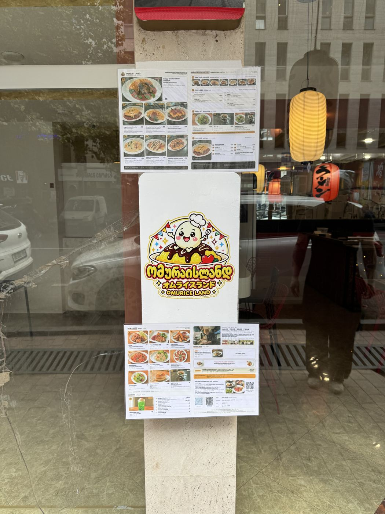

ジョージアに行けなくても、
トビリシの店から、オンラインで。
「ジョージアでノマド、気になる。でも仕事や家族があって、今すぐは行けない」。そんな声を本当にたくさんいただきます。
私はトビリシで日本食の店をやりながら、現地で会社と口座を作りました。その店と経験を、そのままオンラインでお届けします。まずは無料の説明会からどうぞ。

無料オンライン説明会（30分・顔出しなしでOK）
- ジョージアの今（ビザ・生活費・2026年の新しいルール）
- 行かずにできること・行ったらできること
- 質問は何でも。聞くだけの参加も大歓迎です
日時：毎月2回 土曜 日本時間16:00〜16:30（次回の日程はLINEでお知らせします）
LINEで「説明会」と送る（無料）オンラインで参加できるもの
第1期 募集中（12月5日スタート）
トビリシ寺子屋オンライン（4週間）
49,800円（税込）
第1期モニター3名だけ 29,800円
- 毎週土曜のライブ授業（60分×4回・録画あり）
- トビリシの店の本物の仕事が課題（SNS投稿・外国人向けメニュー・集客の企画）
- 課題は毎週、店主が添削
- 期間中はLINEで質問し放題
- あとで現地の寺子屋に来るなら、この参加費を全額差し引き
通常価格（49,800円）で申し込む
日本にいたまま進めたい人に
会社・口座のリモート代行
200,000円〜
- 日本で公証した委任状で、ジョージアに会社（LLC）を作ります
- 法人口座の開設まで、現地の私たちが代わりに進めます
こんな人に向いています
- 海外でノマドをしてみたいけど、まずは日本で準備したい
- 会社員のうちに、リモートで稼げる力をつけておきたい
- いつかジョージアに行くときのために、現地のつながりを作っておきたい
- 飲食店の集客や、外国人のお客さん向けの工夫を学びたい
申し込みの流れ
- LINEで「説明会」と送って、無料説明会に参加（すぐ決めた方はこの手順は不要です）
- このページの「申し込む」ボタンからカードでお支払い
- LINEでお名前を送ってください（お支払いの確認に使います）
- 初回の授業のZoomリンクをお送りして、スタートです
よくある質問
本当にオンラインだけで参加できますか？
できます。授業はZoom、質問と課題の提出はLINEです。日本にいたまま、トビリシで実際に営業している店の仕事を教材にして学べます。
授業の時間は？見逃したらどうなりますか？
毎週土曜の日本時間16:00から60分です（トビリシは朝11時、店を開ける前）。すべて録画するので、仕事などで出られない日はあとから見られます。
何が身につきますか？
SNSでお客さんを集める投稿の作り方、外国人向けのメニューや案内の作り方、海外の店の集客の考え方、リモートで仕事を取る方法です。実際の店で使う物を作るので、そのまま自分の作品（実績）になります。
あとから現地の寺子屋に行きたくなったら？
オンラインの参加費を、現地の「トビリシ寺子屋」の参加費から全額差し引きます。まずオンラインで試して、合えば現地へ、という使い方ができます。
説明会に出たら、申し込まないといけませんか？
いいえ。説明会は無料で、聞くだけでも大丈夫です。ジョージアのことを何でも質問してください。
支払い方法は？
クレジットカード（Apple Payなども可）でお支払いいただけます。このページの「申し込む」ボタンから進んでください。